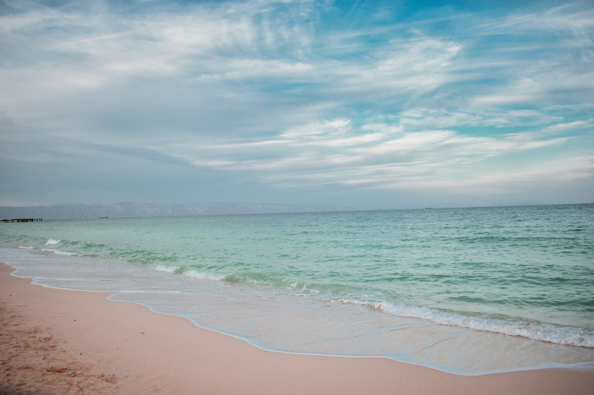
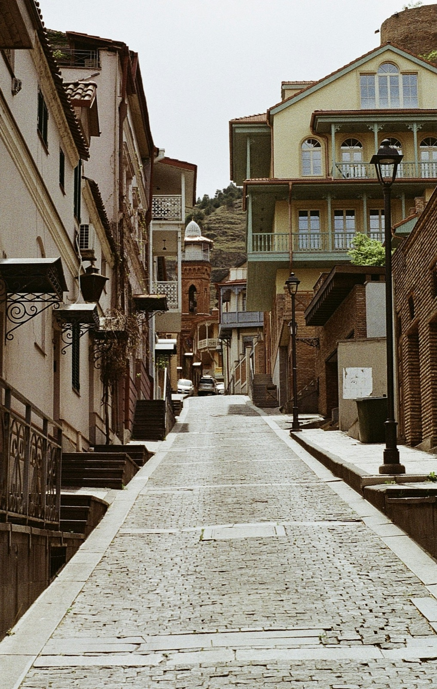
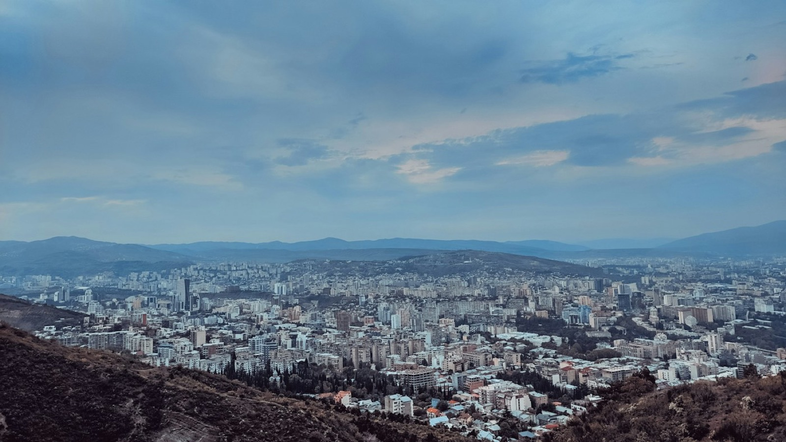

راهنمای سفر به استانبول؛ نکات مهم قبل از سفر با بهترین زمان سفر، دیدنیترین جاذبهها و نکات ضروری استانبول آشنا شوید. خواندنادامهنوشته
بهترین زمان سفر به دبی و تجربه آبوهوای دلپذیر فصل مناسب سفر، رویدادهای محبوب و راههای کاهش هزینه سفر به دبی را بشناسید. خواندنادامهنوشته
 جاهای دیدنی کیش؛ از ساحل مرجان تا شهر زیرزمینی محبوبترین جاذبههای طبیعی و تفریحی کیش را برای یک سفر خاطرهانگیز مرور کنید. خواندنادامهنوشته
راهنمای خرید بلیط هواپیما با قیمت مناسب با زمان مناسب رزرو و نکات مقایسه پروازها، بلیط سفر بعدی را هوشمندانهتر بخرید. خواندنادامهنوشته
 سفر به تفلیس؛ راهنمای کامل پایتخت گرجستان از محلههای تاریخی تا غذاهای محلی، برای کشف تفلیس و برنامه سفر آماده شوید. خواندنادامهنوشته
 بهترین مقاصد اقتصادی برای یک سفر خارجی مقصدهای مقرونبهصرفه را همراه با برآورد هزینه و پیشنهادهای کاربردی سفر بشناسید. خواندنادامهنوشته